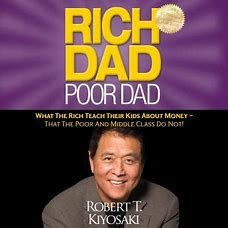
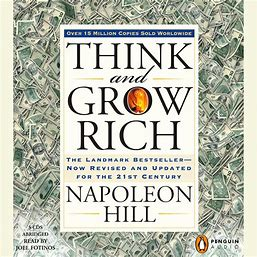
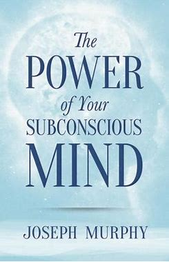
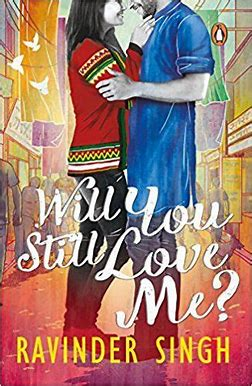

The books review.
The books i read and found very useful and intersting.
List of books i have review
- rich dad poor dad
- think and grow rich
- the power of subconsious mind
- our thought make what we are
- will u still love me ?

1.rich dad and poor dad
Study Financial Literacy Financial Literacy in terms of the understanding difference between assets and liabilities. Assets put money in your pocket and Liabilities take money out from your pocket. Poor buy liabilities like loan, Home, car while Rich buys assets like Stocks, bonds, notes, real-estate, etc. #3: Mind Your Own Business Financial struggle is often directly the result of people working all their lives for someone else. To become financially secure, a person needs to mind their own business. Your business revolves around your asset columnce. Always welcome change, be creative and take calculated risks. #6: Work to Learn - Don't Work for Money Most people need only to learn and master one more skill and their income would jump exponentially. For example, if you are a writer and if you learn the skills of sales and marketing, your income would jump dramatically. Seek work to learn, more than earn. #7: Overcome Obstacles Things to overcome in life: #a: Fear of losing money. #b: Cynicism, remove doubts about yourself and others, and stop talking about negative things. #c: Beat Laziness, to beat laziness one should be the greedy inside. #d: Bad Habits, Our lives are a reflection of our habits. #e: Arrogance, Arrogance is ego plus ignorance.

Think and grow rich By napoleon hill is a top-selling book with over 15 million copies sold all over the world. The book was originally published in 1937 and throws deep insights into monetary and personal satisfaction for entrepreneurs.
Struggling financially? The book “think and grow rich” not only talks about how to think big and grow your income to become rich but also de-ciphers all mental barriers allocated to lack of growth. The book orchestrates ways into the power of burning desire to change your mind and ultimately change your life.
The book highlights the importance of thoughts and mind power. It talks about goals, success, focus, and most importantly growth.
Here’s the complete summary of the book think and grow rich by Napoleon Hill.
Desire:
A burning desire is a very powerful thing. It brings chemical changes in your mind through your positive thoughts. It pulls the motivation to do something and also pushes the motivation so you are inclined to take the action and move forward.
Failure:
People fail but instead of emotionally attaching themselves to the failure, assess the reason for your failure, prepare, and try again.
Faith:
Everything has a starting point and faith is the starting point of success. It is the faith that holds your motive together for something. By bringing a change in your thinking and by training your mind, faith can be induced for creating affirmations to the subconscious mind by orchestrating ways for positive emotions and blocking negative emotions.
If you believe in yourself, people will believe in you and according to the author, Faith is an antidote for failure.
Faith is the starting point of all accumulation of riches!
It’s an attribute that transmits spiritual elements and changes ordinary thoughts.
Faith also summons your proactiveness to never stop trying, to be willing to help others, and understand the importance of self-confidence.
The fear of Poverty
The Fear of Criticism
The fear of ill Health
The fear of loss of the love of someone
The fear of old age
The fear of death
By training our minds and allowing positive thoughts, we can overcome these fears.
“The first and best victory is to conquer self. To be conquered by self is, of all things, the most shameful and vile.” ~ Plato
The book also highlights the importance of staying busy in order to avoid the gateway to these negative thoughts.

The Power of the Subconscious Mind Summary
I n the book, Murphy talks at length about the power (and underutilisation) of the subconscious mind.
He first draws on the examples of two types of people; that which he calls the magnetised man, who’s full of confidence and courage and the demagnetised man, who’s full of fear and doubt.
“[The magnetized] man will not get very far in life because, if he is afraid to go forward, he will simply stay where he is. Become a magnetized man and discover the master secret of the ages.”
Murphy states that most of mankind lives in a “world without”, while more enlightened beings are immersed in the world within.
By focusing on our inner states, such as “thought, feelings and imagery”, we can influence our external reality.
Thoughts and Beliefs
Hence, our beliefs and language have to be monitored carefully.
“If you want to write a book, write a wonderful play, give a better talk to your audience, convey the idea lovingly and feelingly to your subconscious mind, and it will respond accordingly.”
And here, frequency becomes important, with the “repetition of constructive, harmonious thoughts.”
Furthermore, it’s im
And this does seem like an all too common phenomenon. We are often vessels for the thoughts and feelings of others, absorbing their opinions and constructing our thoughts based upon their worldview.
By giving our mental consent, we give their suggestions power. But Murphy reminds us that we have the ability, with reflection, to choose our own inputs.
Often where we go wrong, however, is through indecision. If we conclude that we’re confused and don’t know how to think or act, we neutralise the power of our autosuggestion.

will u still love me ? Will You Still Love Me? by Ravinder Singh is a light romance short novel. The author shot into fame with his debut tragic love story called ‘I Too Had a Love Story’. Since then he had been writing light but slightly tragic love stories. This book is about love at first sight in the flight. The
The scenes presented in this book are commonplace, more of them like we often see in the Bollywood movies. The book is good with some aspects like road safety – due to a road accident the story takes an unprecedented turn – but overall it was necessary otherwise tragic element would haven’t added in it. Also, the girl is from North East and the boy from Punjab, North India. The kind of cultural differences they face and how they handle to come to the terms of love and meet is remarkable. The story is written in simple and lucid way, mostly for young readers who can relate the story somehow to their life. One time read…fast and slightly gripping.